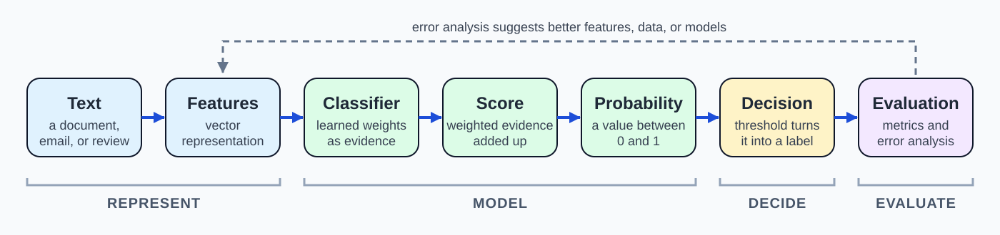

5.1 Text Classification and Model Evaluation#
Week 03 showed how text can be represented as vectors. Week 04 used those vectors to ask: which texts are most similar?
This week asks a different question:
Can we learn from labeled examples to assign a category to new text?
That is text classification. It powers spam filters, sentiment analysis, toxicity detection, language identification, and many other systems you already use.
The conceptual progression below is the roadmap for this chapter. We will follow one running example, a spam filter, from left to right.

Fig. 13 From Text to an Evaluated Decision#
Notice that the pipeline builds directly on earlier weeks. The first two steps are the representation work from Week 03. The rest of the pipeline is new: learning a classifier, turning its output into a decision, and checking whether that decision can be trusted.
1. What is text classification?#
Text classification takes a piece of text and assigns it one label from a fixed set of categories [JM26].
Spam detection: is this email
spamornot spam?Sentiment analysis: is this review
positiveornegative?Toxicity detection: should this comment be flagged?
Language identification: which language is this text written in?
Topic routing: which team should receive this support message?
Every text classification system has the same four ingredients:
Input: the text (an email, a review, a tweet).
Features: numbers that describe the text, such as the word counts or TF-IDF values you built in Week 03.
Label: the category we want to predict.
Prediction: the label the model assigns to a new text.
Note
Input: "Congratulations! You are a winner. Claim your free prize now."
Features: how often each word in our vocabulary appears in the email.
Label we want: spam
When there are only two categories, we call the task binary classification. When there are more than two, it is multiclass classification. We start with binary and return to multiclass in Section 7.
Learning from labeled examples#
A classifier learns from examples that humans have already labeled. These human-provided labels are often called gold labels. This is called supervised learning: we show the model many emails together with the correct answer, and it learns which patterns go with which label.
Note
A brief note on Naive Bayes. Naive Bayes is a classic text-classification baseline. It compares how likely each word is to appear in spam emails versus non-spam emails, and it combines that evidence while “naively” treating words as independent of one another. It is fast, simple, and still useful as a point of comparison for more complex models.
We will not work through its mechanics here. Its implementation and details are left to Coding Practice.
In this chapter we focus on logistic regression, because its decisions are easy to read and explain.
Important
A classifier is only as good as the labeled examples and the features it learns from. Before trusting any model, ask: where did the labels come from, and what does the model actually get to see?
2. Logistic regression: an interpretable baseline#
Logistic regression is a simple and widely used starting point for text classification. Even when a more complex model is available, it is common to build a logistic regression baseline first, because it is fast, and because we can see why it made a decision.
The core idea is weighted evidence.
Features as evidence#
Each feature (for example, the count of the word free) is multiplied by a weight the model has learned [JM26].
A positive weight means the feature is evidence for the target class (spam).
A negative weight means the feature is evidence against it.
A weight near zero means the feature barely matters.
Note
These weights are made up to keep the example small. A real model learns thousands of them from labeled data.
Word |
Weight |
Meaning |
|---|---|---|
|
+1.5 |
strong evidence for spam |
|
+1.2 |
evidence for spam |
|
−1.0 |
evidence against spam |
The bias term#
The model also has a bias term (also called the intercept). It is a baseline adjustment that is added no matter which words appear. In our spam filter the bias is −2.0. This means the model starts out skeptical: most emails are not spam, so it needs enough positive evidence to overcome that starting point.
From evidence to a score#
To classify an email, the model adds up the weighted evidence and the bias. The total is called the score.
Consider the email "Free prize! Claim your free prize now." Here free appears twice, prize appears twice, and meeting does not appear.
Feature |
Count |
Weight |
Contribution |
|---|---|---|---|
|
2 |
+1.2 |
+2.4 |
|
2 |
+1.5 |
+3.0 |
|
0 |
−1.0 |
0.0 |
bias |
−2.0 |
||
Score |
+3.4 |
For the email "Meeting notes attached.", only meeting appears once, so the score is −1.0 + (−2.0) = −3.0.
From a score to a probability#
A score can be any number, large or small, positive or negative. That is not very convenient for a decision. So the model passes the score through the sigmoid function, which squashes any score into a probability between 0 and 1.
Score |
Probability of spam |
Interpretation |
|---|---|---|
−3.0 |
0.05 |
very unlikely to be spam |
0.0 |
0.50 |
completely undecided |
+3.4 |
0.97 |
very likely spam |
Note
You do not need to memorize the sigmoid formula. It is shown here only so you recognize it:
What matters is the behavior: large negative scores give probabilities near 0, large positive scores give probabilities near 1, and a score of 0 gives exactly 0.5.
From a probability to a decision#
Finally, we apply a decision threshold. A common default is 0.5: if the probability of spam is above 0.5, predict spam; otherwise predict not spam [JM26].
So the first email (0.97) is labeled spam, and the second (0.05) is labeled not spam.
Important
Logistic regression gives us a score, then a probability, and only then a decision. These are three different things. We will see in Section 6 why keeping them separate matters.
We are not deriving how the weights are learned. In this course, the goal is to read and interpret a classifier: what evidence it uses, how confident it is, and where it might go wrong.
3. Training a classifier without fooling yourself#
A model can look excellent and still fail in real use. The most common reason is that we tested it in a way that flattered it. The fix is to be careful about which data we use for what.
Training, development, and test sets#
We split our labeled emails into three parts [JM26]:
Split |
Example size |
Purpose |
Analogy |
|---|---|---|---|
Training set |
8,000 emails |
learn the weights |
practice problems |
Development (dev) set |
1,000 emails |
compare models, tune choices, inspect errors |
practice exam |
Test set |
1,000 emails |
report final performance, used once |
final exam |
The model only learns from the training set. We use the dev set while we are still making decisions. The test set stays untouched until we are ready to report how well the final model works.
Why not evaluate on the training data?#
A model can memorize its training examples, including accidental quirks. Imagine every spam email in our training set that contained the number 48213 happened to come from one mass mailing. A model could learn 48213 as strong evidence for spam. It would score well on the training data, but that pattern would not help on new emails. This is called overfitting.
Training-set performance tells us how well the model remembers. Test-set performance tells us how well it generalizes.
Cross-validation, briefly#
A single dev set can be small or unrepresentative. Cross-validation addresses this by repeating the process: the data is split into several parts, and each part takes a turn as the held-out set while the model trains on the rest. The results are then averaged to give a more stable estimate [JM26].
The key idea is simple: use more of your data for evaluation without ever grading the model on examples it trained on. A common practice is to keep a final test set completely separate and use cross-validation only within the training data.
Data leakage#
Important
Data leakage happens when information from the dev or test data sneaks into training or model design. The result is an evaluation that looks better than real-world performance will be.
Some ways this happens with our spam filter:
The same mass-mailed email (or near-duplicates) appears in both training and test sets.
We repeatedly tune the model to improve the test score, so the test set quietly becomes part of training.
We compute TF-IDF values using all the emails, including the test emails, before splitting.
Note
A helpful check: if a result seems too good to be true, look for leakage first.
4. The confusion matrix: understanding model mistakes#
Suppose our final spam filter is run on the 1,000 emails in the test set. In this test set, 50 emails are actually spam and 950 are not. We treat spam as the positive class.
A confusion matrix counts how the model’s predictions compare with the gold labels:
Predicted spam |
Predicted not spam |
|
|---|---|---|
Actually spam |
40 (TP) |
10 (FN) |
Actually not spam |
20 (FP) |
930 (TN) |
Each cell has a name:
True positive (TP): spam correctly caught. (40)
False negative (FN): spam that slipped through to the inbox. (10)
False positive (FP): a real email wrongly sent to the spam folder. (20)
True negative (TN): a real email correctly left in the inbox. (930)
Not all mistakes cost the same#
The two kinds of errors do not have the same consequences.
A false negative in a spam filter means one extra junk email in your inbox. This is annoying.
A false positive means a real message, perhaps a job offer or a message from your professor, is hidden in the spam folder. This can be costly.
Note
Now consider a different task: toxicity detection. A false positive means a harmless comment is flagged or removed, which can silence someone. A false negative means abusive content stays visible. Jurafsky and Martin point out that some widely used toxicity classifiers have been shown to flag non-toxic sentences simply because they mention certain identities [JM26]. Which error is worse depends on the application.
Important
A confusion matrix does more than count mistakes. It shows which kind of mistakes the model makes, and that is what we need in order to judge whether the model is fit for its purpose.
5. Accuracy, precision, recall, and F1#
From the four cells of the confusion matrix we can compute several metrics. Each answers a different question.
Accuracy#
Accuracy asks: what fraction of all predictions were correct?
97% sounds impressive. But look at what a useless filter would do.
Important
Imagine a “filter” that labels every email as not spam. On our test set, it would be correct for all 950 real emails and wrong for all 50 spam emails. Its accuracy would be 95%, yet it would catch zero spam.
This is why accuracy can be misleading when one class is much rarer than the other. Jurafsky and Martin illustrate the same problem with a classifier that labels every tweet “not about pie” and still reaches 99.99% accuracy [JM26]. Accuracy is not wrong. It just does not tell us whether we are finding the thing we care about.
Precision and recall#
Two metrics focus on the class we care about:
Precision asks: when the filter says spam, how often is it right?
Recall asks: of all the spam that exists, how much did the filter catch?
Read these in plain language: two out of three emails the filter flags really are spam, and the filter catches four out of five spam emails.
F1#
Precision and recall often pull in opposite directions. F1 combines them into one number:
F1 is a kind of average that is pulled toward the lower of the two values, so a model cannot hide a weak precision behind a strong recall, or the other way around [JM26].
Which metric should I use?#
There is no universally best metric. The right one depends on which mistakes matter.
Situation |
What you care about most |
Look at |
|---|---|---|
Spam filter that must not hide real email |
avoiding false positives |
precision |
Screening for a rare but serious problem |
avoiding false negatives |
recall |
You need a balance of both |
catching spam without too many false alarms |
F1 |
Classes are balanced and errors cost about the same |
overall correctness |
accuracy |
Macro vs. micro averaging#
So far we had two classes. With more than two classes, we need a way to combine per-class results into a single number. Suppose the filter sorts email into three folders: spam, promotions, and important. On 320 test emails, the confusion matrix is:
Pred. spam |
Pred. promotions |
Pred. important |
Total |
|
|---|---|---|---|---|
Actually spam |
92 |
5 |
3 |
100 |
Actually promotions |
6 |
185 |
9 |
200 |
Actually important |
3 |
12 |
5 |
20 |
Computing precision and recall for each class separately gives:
Class |
Precision |
Recall |
|---|---|---|
spam |
0.91 |
0.92 |
promotions |
0.92 |
0.93 |
important |
0.29 |
0.25 |
There are two common ways to summarize this [JM26]:
Micro-averaging pools all the decisions into one big table and computes the metric once. Every email counts equally, so large classes dominate. Here, micro precision and recall are both about 0.88.
Macro-averaging computes the metric for each class and then averages the classes. Every class counts equally. Here, macro precision is about 0.71 and macro recall is about 0.70.
Important
The micro average (0.88) looks healthy because the two large classes are doing well. The macro average (about 0.70) exposes that the small important class is handled poorly, and that class may be the one users care about most.
Use micro when overall performance across all texts is the goal. Use macro when performance on rare classes matters. When in doubt, look at the per-class numbers too.
6. Decision thresholds and model behavior#
Recall the pipeline from Section 2: score, then probability, then decision.
Important
A probability is not a decision. The model estimates how likely an email is to be spam. A threshold, chosen by people, turns that estimate into an action.
Suppose the model gives some email a spam probability of 0.62. With a 0.5 threshold it goes to the spam folder. With a 0.9 threshold it stays in the inbox. Same model, same probability, different decision.
What happens when we move the threshold?#
Here is the same spam filter on the same 1,000 test emails at three different thresholds (illustrative numbers):
Threshold |
Spam caught (TP) |
Spam missed (FN) |
Real emails flagged (FP) |
Precision |
Recall |
|---|---|---|---|---|---|
0.2 |
47 |
3 |
80 |
0.37 |
0.94 |
0.5 |
40 |
10 |
20 |
0.67 |
0.80 |
0.9 |
30 |
20 |
3 |
0.91 |
0.60 |
Raising the threshold makes the filter more cautious. It flags fewer emails, so precision goes up, but it misses more spam, so recall goes down.
Lowering the threshold makes the filter more aggressive. It catches more spam, so recall goes up, but it flags more real emails, so precision goes down.
This is the precision-recall trade-off. You cannot improve both by moving the threshold; you choose which mistake you would rather make.
Note
Look at accuracy across the three rows: about 92%, 97%, and 98%. Accuracy barely changes between the last two settings, but the behavior is very different: 20 real emails flagged versus 3. And at threshold 0.2, accuracy (92%) falls below the “always say not spam” filter (95%). Accuracy alone would hide most of this story.
0.5 is a default, not a rule#
A threshold of 0.5 treats a false positive and a false negative as equally bad. In real applications that is rarely true.
Spam filter: hiding a real email is worse than seeing one extra spam message, so a higher threshold makes sense.
Toxicity moderation: a system might use a lower threshold to send borderline comments to a human reviewer, and a higher threshold before automatically removing anything, because wrongly removing a comment silences a person.
Important
Choose the threshold using the dev set, and base the choice on the cost of each type of error. If you tune it on the test set, you have leaked test information into your model.
7. From binary to multiclass classification#
The three-folder filter from Section 5 is a multiclass problem: each email gets exactly one of spam, promotions, or important. The same ideas carry over. The difference is that the model now compares evidence for several labels instead of two.
One score per class#
Each class has its own set of weights, which you can think of as that class’s own “profile” of evidence. The important profile might reward words like deadline and meeting, while the promotions profile rewards words like sale and discount. For each email, the model computes one score per class, exactly as in Section 2.
Softmax: scores to probabilities#
We want the scores to become probabilities that compete with each other. The softmax function does this: it converts a list of scores into probabilities that are all between 0 and 1 and add up to 1. The class with the highest probability becomes the prediction.
Class |
Score |
Probability |
|---|---|---|
spam |
2.0 |
0.71 |
promotions |
1.0 |
0.26 |
important |
−1.0 |
0.04 |
Here the model predicts spam, and its confidence is about 71%.
Note
Softmax is best understood as a bridge idea. You will meet it again in neural networks and language models, where a model chooses among many possible outputs. We do not derive it here, and we do not cover how the class weights are learned.
Evaluation with several classes#
Everything from Sections 3 to 6 still applies. The confusion matrix simply grows to one row and column per class, and we summarize performance with per-class precision and recall, plus the macro and micro averages from Section 5.
8. Responsible evaluation: error analysis and limitations#
A single score, even a good one, does not tell us whether a classifier is ready to use. Responsible evaluation means looking beyond the number.
Look at the mistakes#
The most useful evaluation step is often the simplest: read the misclassified examples. Pull out the false positives and false negatives from the dev set and look for recurring patterns.
For our spam filter, you might find:
legitimate newsletters and receipts are flagged because they contain the word
free;spam written with deliberate misspellings (
fr33 pr1ze) slips through;very short emails are hard to judge either way.
Because logistic regression uses weights, you can also inspect the highest and lowest weights to see what the model has learned to rely on. This is one reason it is called an interpretable baseline [JM26]. If a feature is doing suspicious work, such as an email footer that only appears in one dataset, that is a sign of a shortcut rather than real understanding.
Each pattern suggests an action: add features, collect more examples, adjust the threshold, or clarify the labeling guidelines.
Aggregate metrics can hide problems#
An overall metric averages over everything, and averages can hide weaknesses.
Class imbalance: as in Section 5, a good overall score can conceal poor performance on a rare class.
Subgroup performance: a model can do well overall and still make many more errors for particular groups of users, dialects, or topics. Jurafsky and Martin summarize a study of sentiment analysis systems that assigned lower sentiment to otherwise identical sentences when they contained common African American first names rather than common European American first names [JM26]. A single overall accuracy number would not reveal this kind of problem.
Distribution shift: a model is only trained on one kind of text. A spam filter trained on last year’s email may fail on new phishing styles, and a sentiment model trained on movie reviews may not work on social media posts.
Jurafsky and Martin also note that machine learning systems can replicate and even amplify biases in their training data, and that biases can also come from human labelers, from the resources used, and from pretrained components [JM26].
Model Cards: a brief connection#
One way to make a model’s limitations visible is to document them. A model card is a short document released with a model that describes, for example, its intended use, the data it was trained and evaluated on, and how it performs across different groups and conditions [MWZ+19].
Note
A model card does not fix a biased or inaccurate model. It makes the model’s strengths and limits visible so that others can decide whether it is appropriate for their use.
Important
Newer models such as transformers may replace the simple features and logistic regression used in this chapter, but the evaluation questions do not change: Is the metric right for this task? Which errors matter? What happens at different thresholds? Who is the model wrong about? Any classifier, however advanced, needs to be checked in this way.
9. Key takeaways#
Text classification turns a vector representation of text into a label. Evaluating it well is just as important as building it.
Classification learns from labeled examples and predicts a label for new text.
Logistic regression is an interpretable baseline: weighted evidence becomes a score, then a probability, then a decision.
Naive Bayes is a classic, simple baseline; its details belong in Coding Practice.
Keep training, dev, and test data separate, and watch for data leakage. Cross-validation helps make better use of limited data.
A confusion matrix shows which kinds of errors a model makes.
Accuracy can mislead when classes are imbalanced. Precision, recall, and F1 answer more specific questions; the right choice depends on the cost of each error.
Macro averaging treats every class equally; micro averaging lets large classes dominate.
A probability is not a decision. The threshold is a choice, and 0.5 is a default, not a rule.
Multiclass classification gives one score per class; softmax turns those scores into probabilities.
Responsible evaluation means reading errors, checking subgroups and shifts, and documenting limitations, for example with a model card.
Looking ahead#
The same pipeline and the same evaluation questions will return in later modules on sentiment analysis, transformer-based classification, transfer learning, and comparing models. When those models get more powerful, these habits become more important, not less.
References#
[JM26]
[MWZ+19]